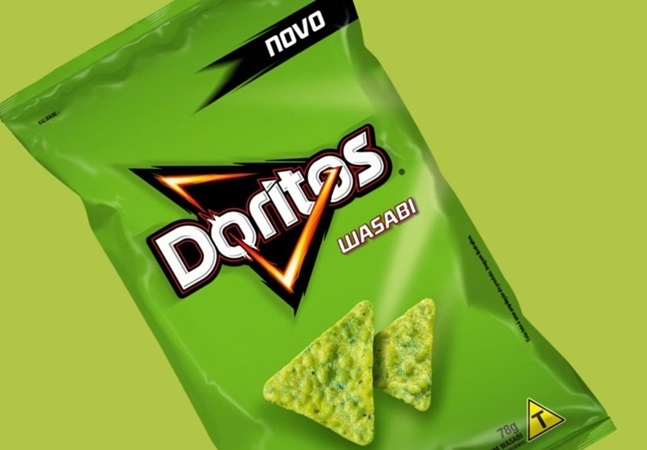

Wasabi Nachos Recipe

Description
Wasabi-spiked sour cream, bagged coleslaw mix, and Cheddar cheese turn leftover pulled pork
and tortilla chips into dinner-worthy nachos.
Ingredients
Yields 8 servings
1 (18 ounce) package tortilla chips
½ pound cooked pulled pork
1 tablespoon reduced-sodium soy sauce
½ teaspoon Chinese five-spice powder
1 cup shredded Cheddar cheese
¼ cup sour cream
2 teaspoons water
½ teaspoon wasabi paste
2 cups shredded cabbage with carrot
¼ cup sliced green onion
¼ cup snipped fresh cilantro
Steps
-
Preheat the oven to 425 degrees F (220 degrees C). Arrange chips on a foil-lined 10x15-inch baking pan.
-
Toss pork, soy sauce, and five-spice powder together in a bowl. Top chips with pork mixture and Cheddar cheese.
-
Bake in the preheated oven until cheese is melted and pork is heated through, about 5 minutes.
-
Stir sour cream, water, and wasabi paste together in a small bowl.
-
Top nachos with coleslaw mix, green onion, and cilantro. Drizzle with wasabi sour cream.